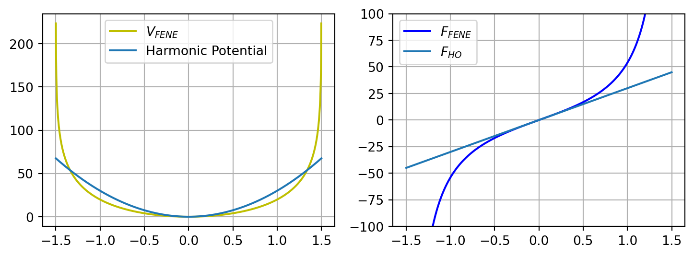
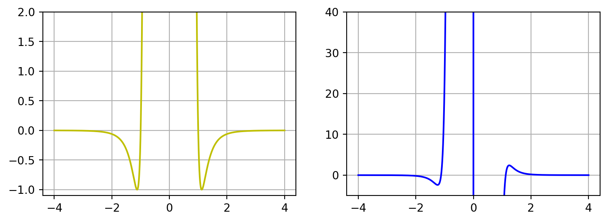
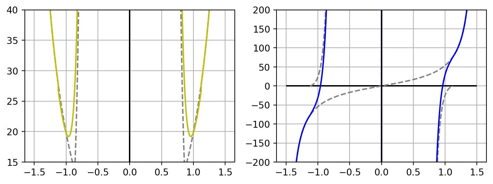

dx = 1e-3
R0_FENE = 1.5
K_FENE = 30
Note
I’ve spend the first two weeks of my PhD trying to implement a polymer simulation from scratch. With each day, my
Parameters
import matplotlib.pyplot as plt
import matplotlib as mpl
import numpy as np
mpl.rcParams.update({"axes.grid": True})
start_x = -R0_FENE+dx
end_x = R0_FENE-dx
n_points = int((end_x-start_x)/dx)
x = np.linspace(start_x, end_x, n_points)
R = np.abs(x)
Vtot = np.zeros_like(x)
Ftot = np.zeros_like(x)Langevin Equation
\[\frac{\vec{v}}{dt} = -\gamma \vec{v} + \xi \mathcal{N}(\mu=0, \sigma=1)\]
Potentials
\(\Delta \vec{x}_{21} = \vec{x}_2 - \vec{x}_1\) is the vector that start from \(\vec{x}_1\) and ends in \(\vec{x}_2\). \[\Delta \vec{x}_{21} = (x_2-x_1; y_2-y_1; z_2-z_1)\] \[||\Delta \vec{x}_{21}|| = \sqrt{(x_2-x_1)^2+(y_2-y_1)^2+(z_2-z_1)^2} = R_{21} \]
An essential quantity is the derivative of the distance between two points with respect to one of the coordinates of one of the points: \[\frac{dR_{21}}{dx_1^i} = \frac{d}{dx_1^i} \sqrt{ \sum \limits_{j=1}^{\text{N dimension}} (x_2^j-x_1^j)^2} = \frac{-2(x_2^i-x_1^i)}{2 \sqrt{ \sum \limits_{j=1}^{\text{N dimension}} (x_2^i-x_1^i)^2}}=-\frac{\Delta x^i_{21}}{R_{21}}\]
Elastic Force
The elastic force originates from the harmonic potential \[V_{HO} = \frac{k_{HO}}{2}(R_{21}-b_0)^2 = \frac{k_{HO}}{2} (R_{21}^2 - 2 R_{21}b_0 + b_0^2)\]
and its force is the one of a simple, rigid, string: \[F^{i}_{1} = -\frac{dV_{HO}}{dx_{1}^i} = -\frac{k_{HO}}{2} \left( 2R_{21}-2b_0 \right) = k_{HO}\left(\Delta x_{21}^i - \frac{b_0 \Delta x_{21}^i}{R_{21}}\right)\]
Notice that the resting distance \(b_0\) is also scaled by the magnitude of the versor.
FENE
\[V_{F}(r) = -\frac{1}{2} k_{F} R_{0}^2 \ln \left[ 1- \left( \frac{r}{R_{0}}\right)^2 \right]\]
As usual, the force is the derivative. \[\begin{aligned} F_{1}^{i} &= - \frac{d V_{F}(R_{21})}{dR_{21}}\frac{dR_{21}}{dx_1^i}\\ &=\frac{1}{2}k_F R_0^2 \frac{-2 \frac{R_{21}}{R_0^2}}{1- \left( \frac{R_{21}}{R_0}\right)^2}\left( -\frac{\Delta x_{21}^i}{R_{21}}\right) \\ &= K_F \frac{1}{1-\left( \frac{R_{21}}{R_0} \right)^2}\Delta x_{21}^i \end{aligned}\]
For small vlaues of the distance, the potential is almost harmonic:
V_FENE=-0.5*K_FENE*R0_FENE**2 * \
np.log(1-np.power(R/R0_FENE,2))
F_FENE = K_FENE* R/(1-np.power(R/R0_FENE, 2)) * (x/R)
fig, axs = plt.subplots(1,2, figsize=(9, 3))
axs[0].plot(x, V_FENE, color="y", label=r"$V_{FENE}$")
axs[0].plot(x, K_FENE*R**2, label="Harmonic Potential")
axs[0].legend()
axs[1].plot(x, F_FENE, color="b", label=r"$F_{FENE}$")
axs[1].plot(x, K_FENE*x, label=r"$F_{HO}$")
axs[1].legend()
axs[1].set_ylim([-100, 100])(-100.0, 100.0)
Lennard-Jones
\[V_{LJ}(r) = 4 \left[ \frac{1}{r^{12}} - \frac{1}{r^{6}} \right]\]
\[\begin{aligned} F_{1}^{i} &= - \frac{d V_{LJ}(R_{21})}{dR_{21}}\frac{dR_{21}}{dx_1^i}\\ &=-4 \left[ \frac{-12}{R_{21}^{13}} - \frac{-6}{R_{21}^{7}}\right] \left( -\frac{\Delta x_{21}^i}{R_{21}}\right) \\ &= -\frac{24}{R_{21}^8} \left[ \frac{2}{R_{21}^6}-1 \right] \Delta x_{21}^i \end{aligned}\]
fig, axs = plt.subplots(1,2, figsize=(9, 3))
V_LJ = 4*( np.power(R, -12)-np.power(R, -6) )
x_LJ = np.linspace(-4, 4, int(12/dx))
R_LJ = np.abs(x_LJ)
V_LJ_tmp = 4*( np.power(R_LJ, -12) -np.power(R_LJ, -6) );
F_LJ = -24*np.power(R_LJ, -8)*(2*np.power(R_LJ, -6)-1)*x_LJ
axs[0].plot(x_LJ, V_LJ_tmp, color="y", label="LENNARD-JONES")
axs[0].set_ylim([-1.1, 2])
axs[1].plot(x_LJ, F_LJ, color="b", label="Total Potential")
axs[1].set_ylim([-5, 40])(-5.0, 40.0)
Total Potential and forces
fig, axs = plt.subplots(1,2, figsize=(9, 3))
R_min = np.power(2, 1/6)
V_tot = -0.5*K_FENE*R0_FENE**2 * np.log(1-np.power(R/R0_FENE,2))
V_tot[R<R_min] += 4*( np.power(R[R<R_min], -12)-np.power(R[R<R_min], -6) )
F_tot = +K_FENE/(1-np.power(R/R0_FENE, 2)) * x
F_tot[R<R_min] += -24*np.power(R[R<R_min], -8)*(2*np.power(R[R<R_min], -6)-1)*x[R<R_min]
axs[0].vlines(0, 15, 40, "k")
axs[0].plot(x_LJ[R_LJ<R_min], V_LJ_tmp[R_LJ<R_min], color="gray", ls="--")
axs[0].plot(x, V_FENE, color="gray", ls="--")
axs[0].plot(x, V_tot, color="y", label="LENNARD-JONES")
axs[0].set_ylim([15, 40])
axs[1].hlines(0, -R0_FENE, R0_FENE, "k")
axs[1].plot(x_LJ[R_LJ<R_min], F_LJ[R_LJ<R_min], color="gray", ls="--")
axs[1].plot(x, F_FENE, color="gray", ls="--")
axs[1].plot(x, F_tot, color="b", label="Total Potential")
axs[1].vlines(0, -200, 200, "k")
axs[1].set_ylim([-200, 200])
plt.show()
V_tot_min = np.min(V_tot[x>0])
print(f"The minimum value of the force on the positive axis is: {V_tot_min}")
R_min = x[V_tot==V_tot_min]
index_R_min = np.where(x == R_min)[0]
print(f"and it occurs at x={x[index_R_min]}")
K_osc = (V_tot[index_R_min+1]-2*V_tot[index_R_min]+V_tot[index_R_min-1])/(dx**2)
print(f"The characteristic oscillations have a duration of: {np.sqrt(1/K_osc)}")The minimum value of the force on the positive axis is: 19.2025767030979
and it occurs at x=[0.96082049]
The characteristic oscillations have a duration of: [0.03189554]